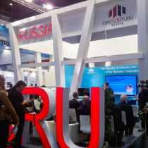
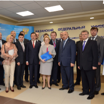
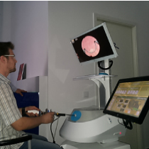
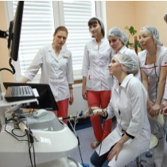

Виртуальный симулятор
эндоваскулярной хирургии
Эйдос—Медицина
Компания ООО «Эйдос-Медицина» — единственный в России производитель виртуальных медицинских тренажеров – входит в пятерку мировых разработчиков симуляционного медицинского оборудования.
Эффективность подготовки специалистов на симуляторах, производимых компанией, достигается благодаря максимальному приближению имитируемой виртуальной обстановки к реальности, а также за счет проработанной и детализированной методики обучения.
Для создания наиболее надежных и эффективных решений для своих клиентов «Эйдос-Медицина» на регулярной основе сотрудничает с врачами и представителями ведущих медицинских вузов России.
Компанией был разработан целый ряд отечественных инновационных медицинских тренажерных комплексов, по своим характеристикам не уступающих зарубежным аналогам. В их число входят симуляторы в области лапароскопии, эндоваскулярных вмешательств, гинекологии и акушерства, экстренной медицины, эндоурологии и гибкой эндоскопии.
Новости

Эйдос-Медицина на MEDIKA-2014 в г.Дюсельдорф
В рамках международной выставки MEDIKA-2014 в г. Дюсельдорф российская компания ООО «ЭЙДОС-Медицина» представила экспозицию медицинских симуляторов.

Посещение Скворцовой В.И. - "Центра Медицинской Науки"
Министр здравоохранения России Скворцова Вероника Игоревна посетила Инжиниринговый Центр медицинских симуляторов "Центр Медицинской Науки".

Учебный центр KARL STORZ в г.Москве
Гистероскопический симулятор компании «Эйдос» используется во время тренингов Учебного центра KARL STORZ в г.Москве.

ВГМУ. Практический курс с использованием симуляционного тренажера «ЭЙДОС»
На базе перинатального центра в г.Волгоград начато обучение врачей гинекологов с использованием гистероскопического симулятора...